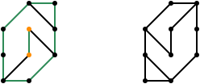

×
Graphle (Harder)
Graphle is similar to Wordle but with graphs instead of words.
The task is to find the secret graph.
As a hint, you are given its number of edges.
You can draw the graph by adding edges between nodes.
To add an edge, click the corresponding nodes (the first one will be highlighted in blue).
To remove an edge, simply click on the edge.
If your graph has the same number of edges as the secret graph, you can press the "Check" button.
This will show you, how close you are to the secret graph.
Note that the nodes are labeled, i.e.,
isomorphic solutions are not valid.
Be careful! Even if the graph is
planar (i.e., the graph can be drawn without crossings), the actual drawing may not be
plane (there may be crossing edges)!
If this version is too hard, you may want to try the
version with more information from the secret graph.
Color code for tries:
- Orange Node: Correct degree.
- Green Node: Correct neighbors.
- Orange Edge: Incident nodes have correct sum of degrees.
- Green Edge: The edge appears in the secret graph.
Here are two examples (left is an input graph, right is a secret graph)
In the first example there are two graphs that are isomorphic but not equal.
The input graph is therefore colored.
Green edges are in both graphs, black edges not.
Except for the two orange nodes (correct degree), every node has a wrong degree.

In the second example there is an orange edge.
With the information that the incident nodes labeled A and B are black, we know that A must have degree three and B must have degree 2.